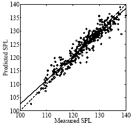
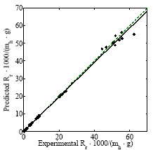

About
This page includes some examples for the Open NN library: http://opennn.cimne.com/
Modeling of data
Linear regression analysis for predicting self noise of airfoils
#include <iostream>
#include <fstream>
#include <sstream>
#include <string>
#include <cstring>
#include <time.h>
#include "../../source/opennn.h"
using namespace OpenNN;
int main(void)
{
srand((unsigned)time(NULL));
DataSet data_set;
data_set.load_data("../data/airfoil_self_noise/airfoil_self_noise.dat");
VariablesInformation* variables_information_pointer = data_set.get_variables_information_pointer();
variables_information_pointer->set_name(0, "frequency");
variables_information_pointer->set_units(0, "hertzs");
variables_information_pointer->set_name(1, "angle_of_attack");
variables_information_pointer->set_units(1, "degrees");
variables_information_pointer->set_name(2, "chord_length");
variables_information_pointer->set_units(2, "meters");
variables_information_pointer->set_name(3, "free_stream_velocity");
variables_information_pointer->set_units(3, "meters per second");
variables_information_pointer->set_name(4, "suction_side_displacement_thickness");
variables_information_pointer->set_units(4, "meters");
variables_information_pointer->set_name(5, "scaled_sound_pressure_level");
variables_information_pointer->set_units(5, "decibels");
const Vector< Vector<std::string> > inputs_targets_information = variables_information_pointer->arrange_inputs_targets_information();
const Vector< Vector<double> > inputs_targets_statistics = data_set.scale_inputs_targets();
InstancesInformation* instances_information_pointer = data_set.get_instances_information_pointer();
instances_information_pointer->split_random_indices();
const unsigned int inputs_number = variables_information_pointer->count_inputs_number();
const unsigned int hidden_perceptrons_number = 9;
const unsigned int outputs_number = variables_information_pointer->count_targets_number();
NeuralNetwork neural_network(inputs_number, hidden_perceptrons_number, outputs_number);
neural_network.set_inputs_outputs_information(inputs_targets_information);
neural_network.set_inputs_outputs_statistics(inputs_targets_statistics);
neural_network.set_scaling_unscaling_layers_flag(false);
PerformanceFunctional performance_functional(&neural_network, &data_set);
TrainingStrategy training_strategy(&performance_functional);
QuasiNewtonMethod* quasi_Newton_method_pointer = new QuasiNewtonMethod(&performance_functional);
quasi_Newton_method_pointer->set_minimum_performance_increase(1.0e-6);
quasi_Newton_method_pointer->set_reserve_evaluation_history(true);
training_strategy.set_main_training_algorithm_pointer(quasi_Newton_method_pointer);
TrainingStrategy::Results training_strategy_results = training_strategy.perform_training();
neural_network.set_inputs_scaling_outputs_unscaling_methods("MinimumMaximum");
neural_network.set_scaling_unscaling_layers_flag(true);
TestingAnalysis testing_analysis(&neural_network, &data_set);
FunctionRegressionTesting* function_regression_testing_pointer = testing_analysis.get_function_regression_testing_pointer();
FunctionRegressionTesting::LinearRegressionAnalysisResults linear_regression_analysis_results = function_regression_testing_pointer->perform_linear_regression_analysis();
data_set.save("../data/airfoil_self_noise/data_set.xml");
data_set.load("../data/airfoil_self_noise/data_set.xml");
neural_network.save("../data/airfoil_self_noise/neural_network.xml");
neural_network.load("../data/airfoil_self_noise/neural_network.xml");
neural_network.save_expression("../data/airfoil_self_noise/expression.txt");
performance_functional.save("../data/airfoil_self_noise/performance_functional.xml");
performance_functional.load("../data/airfoil_self_noise/performance_functional.xml");
training_strategy.save("../data/airfoil_self_noise/training_strategy.xml");
training_strategy.load("../data/airfoil_self_noise/training_strategy.xml");
training_strategy_results.save("../data/airfoil_self_noise/training_strategy_results.dat");
linear_regression_analysis_results.save("../data/airfoil_self_noise/linear_regression_analysis_results.dat");
return(0);
}

Download data set
Loading the data set
Variables information
Instances information
Neural network
Performance functional
Training strategy object
Testing analysis
Save results
Linear regression analysis for predicting residuary resistance of yachts
#include <iostream>
#include <fstream>
#include <sstream>
#include <string>
#include <cstring>
#include <time.h>
#include "../../source/opennn.h"
using namespace OpenNN;
int main(void)
{
srand((unsigned)time(NULL));
DataSet data_set;
data_set.load_data("../data/yacht_resistance_design/delft.dat");
VariablesInformation* variables_information_pointer = data_set.get_variables_information_pointer();
variables_information_pointer->set_name(0, "longitudinal_center_buoyancy");
variables_information_pointer->set_name(1, "prismatic_coecient");
variables_information_pointer->set_name(2, "length_displacement_ratio");
variables_information_pointer->set_name(3, "beam_draught_ratio");
variables_information_pointer->set_name(4, "length_beam_ratio");
variables_information_pointer->set_name(5, "froude_number");
variables_information_pointer->set_name(6, "residuary_resistance");
const Vector< Vector<std::string> > inputs_targets_information = variables_information_pointer->arrange_inputs_targets_information();
InstancesInformation* instances_information_pointer = data_set.get_instances_information_pointer();
instances_information_pointer->split_random_indices();
const Vector< Vector<double> > inputs_targets_statistics = data_set.scale_inputs_targets();
const unsigned int inputs_number = data_set.get_variables_information().count_inputs_number();
const unsigned int hidden_neurons_number = 9;
const unsigned int outputs_number = data_set.get_variables_information().count_targets_number();
NeuralNetwork neural_network(inputs_number, hidden_neurons_number, outputs_number);
neural_network.set_inputs_outputs_information(inputs_targets_information);
neural_network.set_inputs_outputs_statistics(inputs_targets_statistics);
neural_network.set_scaling_unscaling_layers_flag(false);
PerformanceFunctional performance_functional(&neural_network, &data_set);
TrainingStrategy training_strategy(&performance_functional);
TrainingStrategy::Results training_strategy_results = training_strategy.perform_training();
neural_network.set_scaling_unscaling_layers_flag(true);
TestingAnalysis testing_analysis(&neural_network, &data_set);
FunctionRegressionTesting* function_regression_testing_pointer = testing_analysis.get_function_regression_testing_pointer();
FunctionRegressionTesting::LinearRegressionAnalysisResults linear_regression_analysis_results = function_regression_testing_pointer->perform_linear_regression_analysis();
data_set.save("../data/yacht_resistance_design/neural_network.xml");
neural_network.save("../data/yacht_resistance_design/neural_network.xml");
neural_network.save_expression("../data/yacht_resistance_design/expression.txt");
training_strategy.save("../data/yacht_resistance_design/training_strategy.xml");
training_strategy_results.save("../data/yacht_resistance_design/training_strategy_results.dat");
linear_regression_analysis_results.save("../data/yacht_resistance_design/linear_regression_analysis_results.dat");
return(0);

Download data set
Loading the data set
Variables information
Instances information
Neural network
Performance functional
Training strategy object
Testing analysis
Save results
Classical problems in the calculus of variations
Geodesic problem
#include <iostream>
#include <time.h>
#include "arc_length.h"
#include "../../source/opennn.h"
using namespace OpenNN;
int main(void)
{
srand((unsigned)time(NULL));
const double xa = -1.0;
const double ya = -1.0;
const double xb = 1.0;
const double yb = 1.0;
ArcLength arc_length;
arc_length.set_initial_independent_variable(xa);
arc_length.set_final_independent_variable(xb);
NeuralNetwork neural_network(1, 3, 1);
neural_network.construct_inputs_outputs_information();
InputsOutputsInformation* inputs_outputs_information_pointer = neural_network.get_inputs_outputs_information_pointer();
inputs_outputs_information_pointer->set_input_name(0, "x");
inputs_outputs_information_pointer->set_output_name(0, "y");
neural_network.construct_scaling_layer();
ScalingLayer* scaling_layer_pointer = neural_network.get_scaling_layer_pointer();
scaling_layer_pointer->set_minimum(0, xa);
scaling_layer_pointer->set_maximum(0, xb);
neural_network.set_scaling_layer_flag(false);
neural_network.construct_unscaling_layer();
neural_network.set_unscaling_layer_flag(false);
neural_network.construct_conditions_layer();
ConditionsLayer* conditions_layer_pointer = neural_network.get_conditions_layer_pointer();
conditions_layer_pointer->set_external_input_value(0, xa);
conditions_layer_pointer->set_external_input_value(1, xb);
conditions_layer_pointer->set_output_value(0, 0, ya);
conditions_layer_pointer->set_output_value(0, 1, yb);
neural_network.set_conditions_layer_flag(true);
PerformanceFunctional performance_functional(&neural_network);
performance_functional.construct_objective_term(PerformanceFunctional::FINAL_SOLUTIONS_ERROR, &arc_length);
Vector<double> parameters = neural_network.arrange_parameters();
std::cout << performance_functional.calculate_evaluation() << std::endl;
std::cout << performance_functional.calculate_evaluation(parameters) << std::endl;
std::cout << performance_functional.calculate_gradient() << std::endl;
TrainingStrategy training_strategy(&performance_functional);
TrainingStrategy::Results training_strategy_results = training_strategy.perform_training();
arc_length.save("../data/geodesic_problem/arc_length.xml");
arc_length.load("../data/geodesic_problem/arc_length.xml");
arc_length.save("../data/geodesic_problem/arc_length.xml");
arc_length.save_data(neural_network, "../data/geodesic_problem/arc_length_data.dat");
neural_network.save("../data/geodesic_problem/neural_network.xml");
performance_functional.save("../data/geodesic_problem/performance_functional.xml");
training_strategy.save("../data/geodesic_problem/training_strategy.xml");
return(0);
}

Problem parameters
Mathematical model object
Neural network object
Inputs-outputs information
Scaling layer
Unscaling layer
Conditions layer
Performance functional object
Objective term
Training strategy object
Save results to file
Brachistochrone problem
#include <iostream>
#include <time.h>
#include "../../source/opennn.h"
#include "descent_time.h"
using namespace OpenNN;
int main(void)
{
srand((unsigned)time(NULL));
const double xa = 0.0;
const double ya = 1.0;
const double xb = 1.0;
const double yb = 0.0;
DescentTime descent_time;
const double small = 1.0e-3;
descent_time.set_initial_independent_variable(xa+small);
descent_time.set_final_independent_variable(xb);
NeuralNetwork neural_network(1, 3, 1);
neural_network.initialize_parameters_normal(0.0, 0.1);
neural_network.construct_inputs_outputs_information();
InputsOutputsInformation* inputs_outputs_information_pointer = neural_network.get_inputs_outputs_information_pointer();
inputs_outputs_information_pointer->set_input_name(0, "x");
inputs_outputs_information_pointer->set_output_name(0, "y");
neural_network.construct_conditions_layer();
ConditionsLayer* conditions_layer_pointer = neural_network.get_conditions_layer_pointer();
Vector<double> external_input_values(2);
external_input_values[0] = xa;
external_input_values[1] = xb;
conditions_layer_pointer->set_external_input_values(external_input_values);
Matrix<double> output_values(1, 2);
output_values[0][0] = ya;
output_values[0][1] = yb;
conditions_layer_pointer->set_output_values(output_values);
neural_network.construct_bounding_layer();
BoundingLayer* bounding_layer_pointer = neural_network.get_bounding_layer_pointer();
bounding_layer_pointer->set_upper_bound(0, 0.0-1.0e-3);
PerformanceFunctional performance_functional(&neural_network);
performance_functional.construct_objective_term(PerformanceFunctional::FINAL_SOLUTIONS_ERROR, &descent_time);
Vector<double> parameters = neural_network.arrange_parameters();
std::cout << performance_functional.calculate_evaluation() << std::endl;
std::cout << performance_functional.calculate_gradient() << std::endl;
std::cout << performance_functional.calculate_evaluation(parameters) << std::endl;
TrainingStrategy training_strategy(&performance_functional);
TrainingStrategy::Results training_strategy_results = training_strategy.perform_training();
neural_network.save("../data/brachistochrone_problem/neural_network.xml");
neural_network.save_expression("../data/brachistochrone_problem/expression.txt");
descent_time.save_data(neural_network, "../data/brachistochrone_problem/descent_time.dat");
training_strategy_results.save("../data/brachistochrone_problem/training_strategy_results.dat");
return(0);
}
Problem parameters
Mathematical model
Neural network
Inputs-outputs information
Conditions layer
Bounding layer
Performance functional
Objective term
Training strategy object
Save results
Catenary problem
#include <iostream>
#include <time.h>
#include "../../source/opennn.h"
#include "potential_energy.h"
#include "../geodesic_problem/arc_length.h"
using namespace OpenNN;
int main(void)
{
srand( (unsigned)time( NULL ) );
const double xa = 0.0;
const double ya = 1.0;
const double xb = 1.0;
const double yb = 1.0;
const double length = 1.5;
PotentialEnergy potential_energy;
potential_energy.set_initial_independent_variable(xa);
potential_energy.set_final_independent_variable(xb);
ArcLength arc_length;
arc_length.set_initial_independent_variable(xa);
arc_length.set_final_independent_variable(xb);
NeuralNetwork neural_network(1, 3, 1);
neural_network.construct_inputs_outputs_information();
InputsOutputsInformation* inputs_outputs_information_pointer = neural_network.get_inputs_outputs_information_pointer();
inputs_outputs_information_pointer->set_input_name(0, "x");
inputs_outputs_information_pointer->set_output_name(0, "y");
neural_network.construct_scaling_layer();
ScalingLayer* scaling_layer_pointer = neural_network.get_scaling_layer_pointer();
scaling_layer_pointer->set_minimum(0, xa);
scaling_layer_pointer->set_maximum(0, xb);
neural_network.set_scaling_layer_flag(false);
neural_network.construct_unscaling_layer();
UnscalingLayer* unscaling_layer_pointer = neural_network.get_unscaling_layer_pointer();
unscaling_layer_pointer->set_minimum(0, 0.0);
unscaling_layer_pointer->set_maximum(0, yb);
neural_network.set_unscaling_layer_flag(false);
neural_network.construct_conditions_layer();
ConditionsLayer* conditions_layer_pointer = neural_network.get_conditions_layer_pointer();
conditions_layer_pointer->set_external_input_value(0, xa);
conditions_layer_pointer->set_external_input_value(1, xb);
conditions_layer_pointer->set_output_value(0, 0, ya);
conditions_layer_pointer->set_output_value(0, 1, yb);
neural_network.set_conditions_layer_flag(true);
neural_network.construct_bounding_layer();
BoundingLayer* bounding_layer_pointer = neural_network.get_bounding_layer_pointer();
bounding_layer_pointer->set_lower_bound(0, 0.0);
bounding_layer_pointer->set_upper_bound(0, 1.0);
PerformanceFunctional performance_functional(&neural_network);
FinalSolutionsError* final_solutions_error = new FinalSolutionsError(&neural_network, &potential_energy);
final_solutions_error->set_final_solution_error_weight(0, 1.0);
performance_functional.set_objective_term_pointer(final_solutions_error);
Vector<double> parameters = neural_network.arrange_parameters();
std::cout << final_solutions_error->calculate_evaluation() << std::endl;
std::cout << final_solutions_error->calculate_evaluation(parameters) << std::endl;
std::cout << final_solutions_error->calculate_gradient() << std::endl;
FinalSolutionsError* constraints_term_pointer = new FinalSolutionsError(&neural_network, &arc_length);
constraints_term_pointer->set_target_final_solution(0, length);
performance_functional.set_constraints_term_pointer(constraints_term_pointer);
std::cout << constraints_term_pointer->calculate_evaluation() << std::endl;
std::cout << constraints_term_pointer->calculate_evaluation(parameters) << std::endl;
std::cout << constraints_term_pointer->calculate_gradient() << std::endl;
std::cout << performance_functional.calculate_evaluation() << std::endl;
std::cout << performance_functional.calculate_evaluation(parameters) << std::endl;
std::cout << performance_functional.calculate_gradient() << std::endl;
TrainingStrategy training_strategy(&performance_functional);
TrainingStrategy::Results training_strategy_results = training_strategy.perform_training();
potential_energy.save("../data/catenary_problem/potential_energy.xml");
potential_energy.load("../data/catenary_problem/potential_energy.xml");
potential_energy.save_data(neural_network, "../data/catenary_problem/potential_energy_data.dat");
arc_length.save("../data/catenary_problem/arc_length.xml");
arc_length.load("../data/catenary_problem/arc_length.xml");
arc_length.save_data(neural_network, "../data/catenary_problem/arc_length_data.dat");
neural_network.save("../data/catenary_problem/neural_network.xml");
neural_network.load("../data/catenary_problem/neural_network.xml");
neural_network.save_data("../data/catenary_problem/neural_network_data.dat");
neural_network.save_expression("../data/catenary_problem/expression.txt");
performance_functional.save("../data/catenary_problem/performance_functional.xml");
performance_functional.load("../data/catenary_problem/performance_functional.xml");
training_strategy.save("../data/catenary_problem/training_strategy.xml");
training_strategy.load("../data/catenary_problem/training_strategy.xml");
training_strategy_results.save("../data/catenary_problem/training_strategy_results.xml");
return(0);
}
Problem parameters
Mathematical models
Neural network
Inputs-outputs information
Scaling layer
Unscaling layer
Conditions layer
Bounding layer
Performance functional
Objective term
Constratints term
Training strategy
Save results
Optimal control problems
Car problem
#include <iostream>
#include <time.h>
#include "../../source/opennn.h"
#include "car.h"
using namespace OpenNN;
int main(void)
{
srand((unsigned)time(NULL));
const double maximum_acceleration = 1.0;
const double maximum_deceleration = 1.0;
const double final_position = 1.0;
const double final_velocity = 0.0;
Car car;
NeuralNetwork neural_network(1, 3, 2);
neural_network.initialize_parameters_normal(0.0, 0.1);
neural_network.construct_inputs_outputs_information();
InputsOutputsInformation* inputs_outputs_information_pointer = neural_network.get_inputs_outputs_information_pointer();
inputs_outputs_information_pointer->set_input_name(0, "time");
inputs_outputs_information_pointer->set_output_name(0, "throttle_acceleration");
inputs_outputs_information_pointer->set_output_name(1, "bracking_deceleration");
neural_network.construct_scaling_layer();
ScalingLayer* scaling_layer_pointer = neural_network.get_scaling_layer_pointer();
scaling_layer_pointer->set_minimum(0, 0.0);
neural_network.set_scaling_layer_flag(false);
neural_network.construct_unscaling_layer();
UnscalingLayer* unscaling_layer_pointer = neural_network.get_unscaling_layer_pointer();
unscaling_layer_pointer->set_minimum(0, 0.0);
unscaling_layer_pointer->set_maximum(0, maximum_acceleration);
unscaling_layer_pointer->set_minimum(1, -maximum_deceleration);
unscaling_layer_pointer->set_maximum(1, 0.0);
neural_network.set_unscaling_layer_flag(true);
neural_network.construct_bounding_layer();
BoundingLayer* bounding_layer_pointer = neural_network.get_bounding_layer_pointer();
bounding_layer_pointer->set_lower_bound(0, 0.0);
bounding_layer_pointer->set_upper_bound(0, maximum_acceleration);
bounding_layer_pointer->set_lower_bound(1, -maximum_deceleration);
bounding_layer_pointer->set_upper_bound(1, 0.0);
neural_network.construct_independent_parameters();
IndependentParameters* independent_parameters_pointer = neural_network.get_independent_parameters_pointer();
independent_parameters_pointer->set_parameters_number(1);
independent_parameters_pointer->set_parameter(0, 3.1415927);
independent_parameters_pointer->set_name(0, "final_time");
independent_parameters_pointer->set_lower_bound(0, 0.0);
independent_parameters_pointer->set_bounding_flag(true);
PerformanceFunctional performance_functional(&neural_network, &car);
IndependentParametersError* independent_parameters_error = new IndependentParametersError(&neural_network);
independent_parameters_error->set_independent_parameter_error_weight(0, 1.0e-3);
performance_functional.set_objective_term_pointer(independent_parameters_error);
Vector<double> parameters = neural_network.arrange_parameters();
std::cout << independent_parameters_error->calculate_evaluation() << std::endl;
std::cout << independent_parameters_error->calculate_evaluation(parameters) << std::endl;
std::cout << independent_parameters_error->calculate_gradient() << std::endl;
FinalSolutionsError* final_solutions_error = new FinalSolutionsError(&neural_network, &car);
final_solutions_error->set_target_final_solution(0, final_position);
final_solutions_error->set_target_final_solution(1, final_velocity);
final_solutions_error->set_final_solution_error_weight(0, 1.0);
final_solutions_error->set_final_solution_error_weight(1, 1.0);
std::cout << final_solutions_error->calculate_evaluation() << std::endl;
std::cout << final_solutions_error->calculate_evaluation(parameters) << std::endl;
std::cout << final_solutions_error->calculate_gradient() << std::endl;
performance_functional.set_constraints_term_pointer(final_solutions_error);
std::cout << performance_functional.calculate_evaluation() << std::endl;
std::cout << performance_functional.calculate_evaluation(parameters) << std::endl;
std::cout << performance_functional.calculate_gradient() << std::endl;
TrainingStrategy training_strategy(&performance_functional);
training_strategy.construct_initialization_training_algorithm(TrainingStrategy::EVOLUTIONARY_ALGORITHM);
training_strategy.construct_main_training_algorithm(TrainingStrategy::GRADIENT_DESCENT);
const TrainingStrategy::Results training_strategy_results = training_strategy.perform_training();
const double final_time = neural_network.get_independent_parameters_pointer()->get_parameter(0);
car.set_final_independent_variable(final_time);
car.save("../data/car_problem/car.xml");
car.save_data(neural_network, "../data/car_problem/car_data.dat");
neural_network.save("../data/car_problem/neural_network.xml");
neural_network.save_expression("../data/car_problem/expression.txt");
neural_network.save_data("../data/car_problem/neural_network_data.dat");
performance_functional.save("../data/car_problem/performance_functional.xml");
training_strategy.save("../data/car_problem/training_strategy.xml");
training_strategy_results.save("../data/car_problem/training_strategy_results.dat");
return(0);
}

Problem parameters
Mathematical model
Neural network
Inputs-outputs information
Scaling layer
Unscaling layer
Bounding layer
Independent parameters
Performance functional
Objective term
Constraints term
Training strategy
Save results
Maximal feed rate to a fed batch fermenter
#include <iostream>
#include <time.h>
#include "../../source/opennn.h"
#include "fed_batch_fermenter.h"
using namespace OpenNN;
int main(void)
{
srand((unsigned)time(NULL));
double fermenter_volume = 200.0;
double maximum_feed_rate = 12.0;
double final_time = 54.0;
FedBatchFermenter fed_batch_fermenter;
NeuralNetwork neural_network(1, 2, 1);
neural_network.construct_inputs_outputs_information();
InputsOutputsInformation* inputs_outputs_information_pointer = neural_network.get_inputs_outputs_information_pointer();
inputs_outputs_information_pointer->set_input_name(0, "time");
inputs_outputs_information_pointer->set_output_name(0, "feed_rate");
inputs_outputs_information_pointer->set_input_units(0, "seconds");
inputs_outputs_information_pointer->set_output_units(0, "grams");
neural_network.construct_scaling_layer();
ScalingLayer* scaling_layer_pointer = neural_network.get_scaling_layer_pointer();
scaling_layer_pointer->set_minimum(0, 0.0);
scaling_layer_pointer->set_maximum(0, final_time);
neural_network.construct_unscaling_layer();
UnscalingLayer* unscaling_layer_pointer = neural_network.get_unscaling_layer_pointer();
unscaling_layer_pointer->set_minimum(0, 0.0);
unscaling_layer_pointer->set_maximum(0, maximum_feed_rate);
neural_network.construct_bounding_layer();
BoundingLayer* bounding_layer_pointer = neural_network.get_bounding_layer_pointer();
bounding_layer_pointer->set_lower_bound(0, 0.0);
bounding_layer_pointer->set_upper_bound(0, maximum_feed_rate);
neural_network.initialize_parameters_normal(0.0, 1.0e-3);
PerformanceFunctional performance_functional(&neural_network);
FinalSolutionsError* objective_term_pointer = new FinalSolutionsError(&neural_network, &fed_batch_fermenter);
objective_term_pointer->set_final_solution_error_weight(0, 0.0);
objective_term_pointer->set_final_solution_error_weight(1, 0.0);
objective_term_pointer->set_final_solution_error_weight(2, -1.0e-9);
objective_term_pointer->set_final_solution_error_weight(3, 0.0);
performance_functional.set_objective_term_pointer(objective_term_pointer);
FinalSolutionsError* constraints_term_pointer = new FinalSolutionsError(&neural_network, &fed_batch_fermenter);
constraints_term_pointer->set_target_final_solution(3, fermenter_volume);
constraints_term_pointer->set_final_solution_error_weight(0, 0.0);
constraints_term_pointer->set_final_solution_error_weight(1, 0.0);
constraints_term_pointer->set_final_solution_error_weight(2, 0.0);
constraints_term_pointer->set_final_solution_error_weight(3, 1.0e-6);
performance_functional.set_constraints_term_pointer(constraints_term_pointer);
Vector<double> parameters = neural_network.arrange_parameters();
std::cout << performance_functional.calculate_evaluation() << std::endl;
std::cout << performance_functional.calculate_evaluation(parameters) << std::endl;
std::cout << performance_functional.calculate_gradient() << std::endl;
TrainingStrategy training_strategy(&performance_functional);
training_strategy.construct_initialization_training_algorithm(TrainingStrategy::EVOLUTIONARY_ALGORITHM);
training_strategy.construct_main_training_algorithm(TrainingStrategy::QUASI_NEWTON_METHOD);
TrainingStrategy::Results training_strategy_results = training_strategy.perform_training();
fed_batch_fermenter.save("../data/fed_batch_fermenter/fed_batch_fermenter.xml");
fed_batch_fermenter.save_data(neural_network, "../data/fed_batch_fermenter_data.dat");
neural_network.save("../data/fed_batch_fermenter/neural_network.xml");
neural_network.save_expression("../data/fed_batch_fermenter/expression.txt");
neural_network.save_data("../data/fed_batch_fermenter/neural_network_data.dat");
performance_functional.save("../data/fed_batch_fermenter/performance_functional.xml");
training_strategy.save("../data/fed_batch_fermenter/training_strategy.xml");
training_strategy_results.save("../data/fed_batch_fermenter/training_strategy_results.dat");
return(0);
}
Problem parameters
Mathematical model
Neural network
Inputs-outputs information
Scaling layer
Unscaling layer
Bounding layer
Performance functional
Objective term
Constraints term
Training strategy
Initialization training algorithm
Main training algorithm
Save results
Inverse problems
Precipitate dissolution model of an aluminium alloy
#include <iostream>
#include <time.h>
#include "../../source/opennn.h"
#include "precipitate_dissolution.h"
using namespace OpenNN;
int main(void)
{
PrecipitateDissolution precipitate_dissolution;
precipitate_dissolution.set_reference_temperature(573.16); // K
precipitate_dissolution.set_reference_time(1000); // s
precipitate_dissolution.set_minimum_Vickers_hardness(66.9124);
precipitate_dissolution.set_maximum_Vickers_hardness(151.9350);
DataSet data_set;
data_set.load_data("../data/precipitate_dissolution/DataAA-2014-T6.dat");
VariablesInformation* variables_information_pointer = data_set.get_variables_information_pointer();
variables_information_pointer->set(2, 1);
variables_information_pointer->set_name(0, "temperature");
variables_information_pointer->set_name(1, "time");
variables_information_pointer->set_name(2, "vickers_hardness");
variables_information_pointer->set_units(0, "celsius");
variables_information_pointer->set_units(1, "s");
variables_information_pointer->set_units(2, "none");
const Matrix<double> input_data = data_set.arrange_input_data();
NeuralNetwork neural_network(1, 3, 1);
neural_network.construct_inputs_outputs_information();
InputsOutputsInformation* inputs_outputs_information_pointer = neural_network.get_inputs_outputs_information_pointer();
inputs_outputs_information_pointer->set_input_name(0, "log(t/t*)");
inputs_outputs_information_pointer->set_output_name(0, "1-f/f0");
inputs_outputs_information_pointer->set_input_units(0, "none");
inputs_outputs_information_pointer->set_output_units(0, "none");
MultilayerPerceptron* multilayer_perceptron_pointer = neural_network.get_multilayer_perceptron_pointer();
multilayer_perceptron_pointer->initialize_parameters_normal(0.0, 1.0e-2);
neural_network.construct_scaling_layer();
ScalingLayer* scaling_layer_pointer = neural_network.get_scaling_layer_pointer();
scaling_layer_pointer->set_minimum(0, -6.0);
scaling_layer_pointer->set_maximum(0, 6.0);
neural_network.construct_unscaling_layer();
UnscalingLayer* unscaling_layer_pointer = neural_network.get_unscaling_layer_pointer();
unscaling_layer_pointer->set_minimum(0, 0.0);
unscaling_layer_pointer->set_maximum(0, 1.0);
neural_network.construct_bounding_layer();
BoundingLayer* bounding_layer_pointer = neural_network.get_bounding_layer_pointer();
bounding_layer_pointer->set_lower_bound(0, 0.0);
bounding_layer_pointer->set_upper_bound(0, 1.0);
neural_network.construct_independent_parameters();
IndependentParameters* independent_parameters_pointer = neural_network.get_independent_parameters_pointer();
independent_parameters_pointer->set_parameters_number(1);
independent_parameters_pointer->set_name(0, "effective_activation_energy");
independent_parameters_pointer->set_minimum(0, 100.0);
independent_parameters_pointer->set_maximum(0, 200.0);
independent_parameters_pointer->set_lower_bound(0, 0.0);
independent_parameters_pointer->set_parameter(0, 150.0);
precipitate_dissolution.calculate_dependent_variables(neural_network, input_data);
PerformanceFunctional performance_functional(&neural_network);
performance_functional.construct_objective_term(PerformanceFunctional::INVERSE_SUM_SQUARED_ERROR, &precipitate_dissolution, &data_set);
std::cout << performance_functional.calculate_gradient() << std::endl;
TrainingStrategy training_strategy(&performance_functional);
neural_network.save("../data/AA-7449-T79/NeuralNetworkAA-7449-T79.dat");
return(0);
}
Mathematical model
Data set
Neural network
Inputs-outputs information
Multilayer perceptron
Scaling layer
Unscaling layer
Bounding layer
Independent parameters
Performance functional
Objective term
Training strategy
Save results